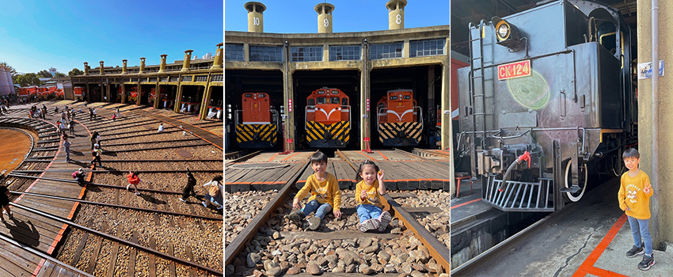
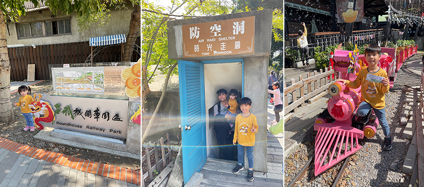
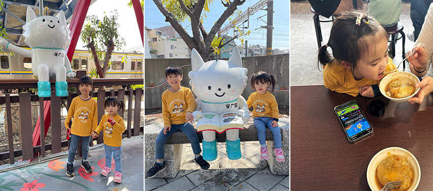

年假期間帶著全家一起到彰化的「扇型車庫」，也是近期很熱門的打卡聖地，對於鐵道迷的兒子來說，這是個絕佳的景點，可以很近距離觀賞火車和特殊的鐵道設計。園區免費參觀，只需要到管理室登記，兒子進到園區後，開心地蹦蹦跳跳，女兒則是一直喊著"湯瑪士、湯瑪士"，彷彿進入真實版湯瑪士小火車的家。
|  |
扇形火車車庫現為彰化縣定古蹟，興建於1922年日治時期，至今已有一百多年歷史，也是全台唯一僅存的扇型車庫，軌道由車庫向外展開如同一把扇子，所以被稱為扇型車庫。中間的調度轉盤是火車進出的樞紐，連結著12個車庫，透過鐵軌轉盤的轉動可以讓火車頭停進車庫中休息或保養，每台火車頭都有專屬的獨立套房，因此又有「火車頭旅館」之稱。
當天車庫內有停放了好幾輛火車頭和一台早期的蒸汽火車頭，兒子親眼目睹復古蒸汽火車頭大開眼界，旁邊還特地建造了一個三樓高的觀景台，可以從高處俯瞰整個車庫的全貌，景象壯觀讓人驚呼連連，扇形車庫緊鄰著彰化火車站，不時也可看見火車呼嘯而過，孩子們看到火車經過時興奮不已。
|  |
逛完扇型車庫後，可以到後方的「戶羽機關車園區」，是近期新開放的鐵道文創區，原先是台鐵舊宿舍。園區內有日式建築小木屋，還有各式各樣的攤位小市集賣著文創商品和特色輕食，最特別的是有一座防空洞，兒子一開始對於走進去會不會黑漆漆感到害怕，但出乎預料裡面很明亮且展示了許多歷史照片，成為時空走廊。這邊最熱門的就是擬真小火車，一張票150元可以提供兩個人搭乘小火車，不限大人或小孩，小火車會繞整個園區兩圈，沿途有規劃平交道和隧道，逛完扇型車庫可以順道來搭火車，小孩們玩得很開心。
|  |
園區外有也有許多可愛的貓咪吉祥物，很適合拍照，它們胸前都寫著"ㄓㄏㄖ"其實就是彰化人的意思，十分有趣。玩完肚子餓可以順道去品嘗彰化最有名的肉圓，簡單的行程兒子和女兒玩得不亦樂乎，大家不妨可以趁著假日帶著全家大小安排個彰化鐵路之旅，絕對是值得親臨現場的文化景點。